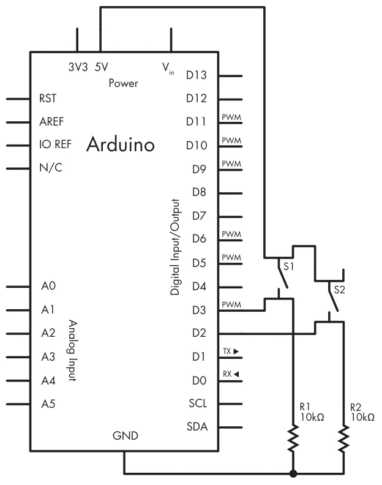
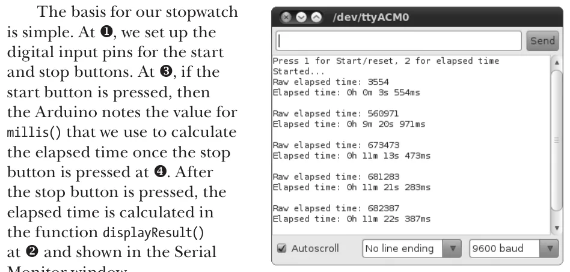

Now that we can measure the elapsed time between two events, we can create a simple stopwatch using an Arduino. Our stopwatch will use two buttons: one to start or reset the count and another to stop counting and show the elapsed time. The sketch will continually check the status of the two buttons. When the start button is pressed, a millis() value will be stored, and when the second button is pressed, a new millis() value will be stored. The custom function displayResult() will convert the elapsed time from milliseconds into hours, minutes, and seconds. Finally, the time will be displayed on the Serial Monitor.
The Hardware
The following hardware is required for this project:
- One breadboard
- Two push buttons (S1 and S2)
- Two 10 kΩ resistors (R1 and R2)
- Various connecting wires
- Arduino and USB cable
The Schematic
The circuit schematic is shown in Figure 8-30.

The Sketch
Enter and upload this sketch:
// Project 31 – Creating a Stopwatch
unsigned long start, finished, elapsed;
void setup()
{
Serial.begin(9600);
❶ pinMode(2, INPUT); // the start button
pinMode(3, INPUT); // the stop button
Serial.println("Press 1 for Start/reset, 2 for elapsed time");
}
void displayResult()
{
float h, m, s, ms;
unsigned long over;
❷ elapsed = finished - start;
h = int(elapsed / 3600000);
over = elapsed % 3600000;
m = int(over / 60000);
over = over % 60000;
s = int(over / 1000);
ms = over % 1000;
Serial.print("Raw elapsed time: ");
Serial.println(elapsed);
Serial.print("Elapsed time: ");
Serial.print(h, 0);
Serial.print("h ");
Serial.print(m, 0);
Serial.print("m ");
Serial.print(s, 0);
Serial.print("s ");
Serial.print(ms, 0);
Serial.println("ms");
Serial.println();
}
void loop()
{
❸ if (digitalRead(2) == HIGH)
{
start = millis();
delay(200); // for debounce
Serial.println("Started...");
}
❹ if (digitalRead(3) == HIGH)
{
finished = millis();
delay(200); // for debounce
displayResult();
}
}
The basis for our stopwatch is simple. At ❶, we set up the digital input pins for the start and stop buttons. At ❸, if the start button is pressed, then the Arduino notes the value for the elapsed time once the stop button is pressed at ❹. After the stop button is pressed, the elapsed time is calculated in the function displayResult() at ❷ and shown in the Serial Monitor window.
The results shown in Figure 8-31 should appear in the Serial Monitor.